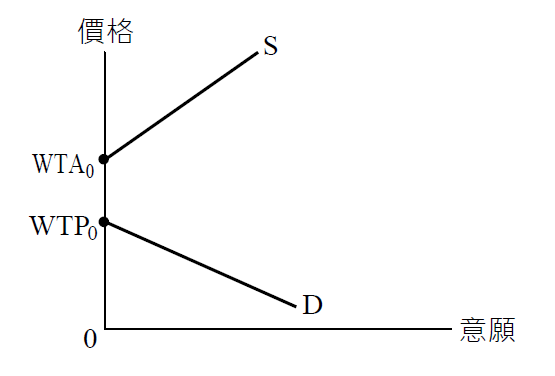

WTP與WTA之應用
• (一) 不動產成交之條件：
不動產交易中，買方購買不動產所願意支付之最高價格（Willingness to Pay, WTP）大於賣方出售不動產所願意接受之最低價格（Willingness to Accept, WTA），雙方才會成交。成交價格（Transaction Price, TP）落在WTP與WTA之間。析言之：
- 買方願付最高價格小於賣方願受最低價格，雙方不會成交。如圖①所示，D代表買方在不同價格下購買意願之強弱。S代表賣方在不同價格下出售意願之強弱。D與S在第一象限無交點，表示買賣雙方不會成交。
[圖片1]
圖① 買賣雙方不會成交
- 買方願付最高價格大於賣方願受最低價格，雙方才會成交。如圖②所示，D與S在第一象限有交點，表示買賣雙方才會成交。成交價格落在WTP0與WTA0之間。假設買方購買意願等於賣方出售意願情況下（即雙方意願皆在W0）成交，則成交價格TP0。總之，不動產成交條件如下： WTA0 ≤ TP0 ≤ WTP0
[圖片2]
圖② 買賣雙方會成交
• (二) 消費者剩餘與生產者剩餘：
買賣雙方成交後，買方擁有消費者剩餘，賣方擁有生產者剩餘。雙方在雙贏之情況下成交，皆大歡喜。消費者剩餘與生產者剩餘皆是一種心理感受。自願交易可以提高買方福利，亦可以提高賣方福利。總之，自願交易可以提高社會福利。
消費者剩餘 = WTP0 - TP0 生產者剩餘 = TP0 - WTA0
• (三) 稟賦效果：
就同一人而言，針對特定不動產，WTA會高於WTP。此稱為稟賦效果（Endowment Effect）。換言之，同一人就失去不動產之痛苦效用，會高於獲得該不動產之快樂效用。亦即「失去」比「獲得」更痛若。例如，現行土地徵收採市價補償，但土地所有權人還是不滿意，這是稟賦效果所造成。
稟賦效果是一種心理因素。土地所有權人持有不動產一段時間後會產生「依戀不捨情感」。時間愈長，依戀不捨情感愈濃厚。基此，就同一人針對特定不動產形成下列關係：
• W. TP + 依戀不捨情感價值 = WTAM 是以，WTA > WTP
上開依戀不捨情感價值，即是稟賦效果。總之，站在徵收者立場，希望採「市價」補償；但站在被徵收者立場，希望採「高於市價」之補償。
這篇文章考過哪些題目
讀完試著自己作答，再點進去對答案。依文字相似度自動比對，不一定完全對應。
- 95 高考《土地經濟學》第 2 題
我國政府機關在進行公共建設或興辦公共事業時，通常會徵收私人土地。試述土地徵收的經濟意義？當政府機關對私人土地被徵收時，必… - 105 地特三等《土地經濟學》第 4 題
土地徵收條例規定，土地徵收改以市價作為補償，但為何近年來土地徵收仍引起民眾之抗爭？請繪圖說明其原因，並提出因應對策。（2…
文章圖片


注：本文圖片存放於 ./images/ 目錄下